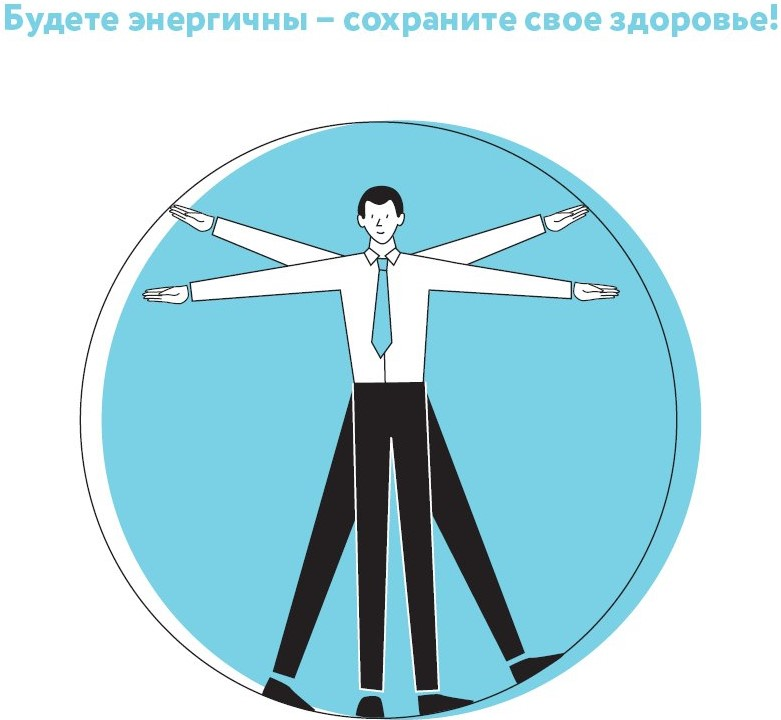
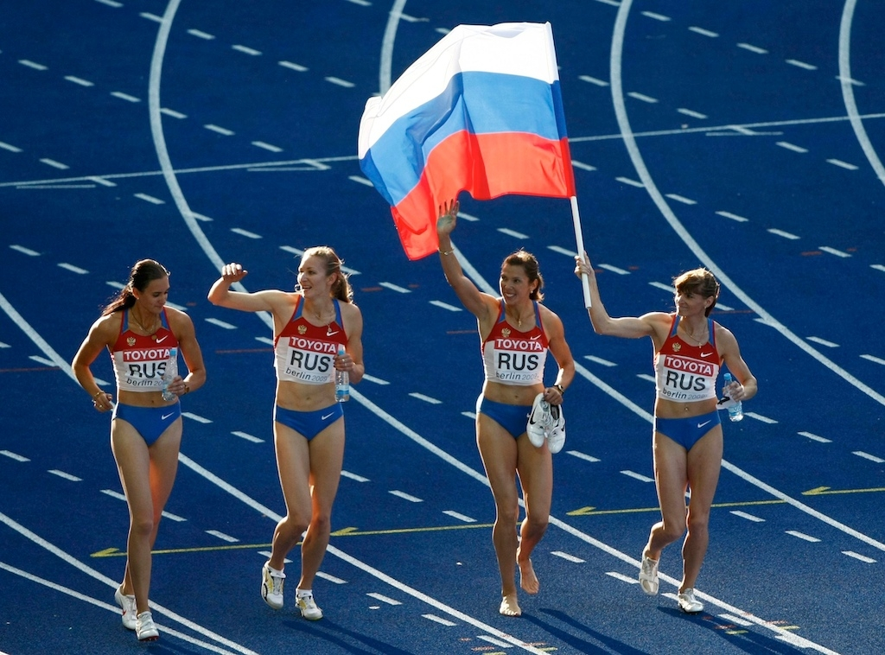

-
Здоровый образ жизни
-
Упражнения для здорового образа жизни
- НА САЙТ АПТ

Теория
-
Гимнастика
Производственная гимнастика у программистов
Формы и виды
Производственную гимнастику проводится в специально отведенное время, либо в течение всего рабочего дня. В первом случае это перерыв длительностью от 30 минут до 1 часа, в течение которого разрешена прогулка на свежем воздухе или посещение корпоративного спортзала, бассейна. При втором производственная гимнастика включается в начале или середине дня, в конце каждого рабочего часа или в микропаузах во время работы. Таким образом, ее можно разделить на 4 основных вида.
Вводная гимнастика
Проводится перед началом трудового дня. Помогает сотрудникам взбодриться, зарядиться энергией и настроиться на продуктивную работу. Комплекс упражнений напоминает классическую утреннюю зарядку с наклонами, махами ногами, вращением головой, руками, тазом.
Физкультурная пауза
Выполняется в первой, если не включена вводная тренировка, и второй половине дня. Представляет собой комплекс из 5-10 упражнений, которые помогут снять усталость, эмоционально расслабиться и продлить работоспособность.
Физкультминутка
Проводится в конце каждого рабочего часа до 5 раз в день. Включает в себя 2-3 простых упражнения на разминку суставов, снятие напряжение с глаз и эмоциональное расслабление. Помогает переключиться на другой вид деятельности, что благотворно влияет на работу головного мозга и работоспособность человека в целом.
Микропауза
Выполняется по усмотрению трудящегося. Предназначена для снятия умственного и физического напряжения с помощью 2-3 движений длительностью в 30 секунд, независимо от рабочего часа.
Правила и подготовка к проведению производственной гимнастики
В некоторых компаниях правила организации рабочего процесса не предусматривают перерывы на физическую активность, несмотря на ее важность в сохранении работоспособности сотрудника. В этом случае рекомендуется самостоятельно включать физпаузы в свободные от работы минуты. Такой отдых будет полезен организму и снизит риски эмоционального выгорания и развития наиболее распространенных производственных болезней: заболеваний и расстройств ЖКТ, сердечно-сосудистой системы, опорно-двигательного аппарата, а также нервных расстройств. Для большей эффективности гимнастики важно учитывать следующие правила:
1.Комплекс должен состоять из простых упражнений, подходящих под уровень физической подготовки. Нельзя допускать интенсивные и тяжелые физические нагрузки, так как это может привести к эмоциональному и физическому переутомлению, что наоборот снизит работоспособность и продуктивность.
2.Тренировки следует проводить за 1-2 часа до и после еды. Во время и после занятия можно выпить стакан воды.
3.Во избежание травм нужно заниматься в удобной одежде. Также обязательно наличие сменной обуви (кроссовки).
4.Тренировка в формате вводной гимнастики или физкультурных пауз должна длиться 10-15 минут. Остальные виды физических нагрузок — от 5 до 10 минут.
5.Для большей эффективности в комплекс включаются упражнения на разминку суставов, на укрепление мышц, расслабление глаз. Для эмоционального расслабления можно выполнить несколько дыхательных упражнений.Производственная гимнастикаПерейти -
Акробатика
Акробатика
Акробатика — это вид спорта, разновидность гимнастики, которая включает в себя упражнения на гибкость, ловкость, прыгучесть, балансировку и силу. Стоит отметить, что данный вид физической активности далеко не всем доступен, он требует физической подготовленности, здоровья и постоянных тренировок под руководством профессионала. Поэтому рекомендуется заниматься акробатикой с раннего детства. Сделав даже маленький перерыв в тренировках, человек уже не сможет вернуться к форме.
Виды акробатики:
Спортивная акробатика. Совмещает в себе несколько программ: парную, прыжковую и групповую. В прыжковой программе спортсмен выполняет трюки на дорожке длиной в 30 м. В групповой и парной акробатике упражнения выполняются группами или парами. Команды могут быть однополыми и смешанными.
Цирковая акробатика. Данный вид гимнастики включает несколько видов: воздушную, прыжковую, силовую акробатику.
Специальная акробатика.
Разработана для тренировки спортсменов, которые занимаются танцами или другими видами спорта. Какова польза акробатики для здоровья? Тренирует мышцы, развивает выносливость и силу. Придает телу гибкости. Улучшает координацию движений, ориентацию в пространстве. Укрепляет вестибулярный аппарат и иммунитет. Улучшает обмен веществ и работу сердечно-сосудистой системы.АкробатикаПерейти -
Лыжи
Лыжный спорт
Лыжный спорт является одним из самых популярных зимних видов спорта. Основной целью лыжного спорта является передвижение на лыжах по снежной поверхности. Есть несколько различных видов передвижения на лыжах, каждый из которых имеет свои особенности:
1. Классический ход: Это самый распространенный и традиционный способ передвижения на лыжах. В классическом ходе лыжник двигается вдоль заготовленных трасс, используя технику "двушага" или "веселого хода".
2. Беговой стиль: Этот стиль передвижения на лыжах используется в беговых соревнованиях. В беговом стиле лыжник использует технику "конькового хода", это положение, в котором лыжник отталкивается от лыж с помощью внутренней стороны ноги
3. Фристайл: Фристайл является видом лыжного спорта, где акцент делается на трюках и прыжках. Лыжник может выполнять различные трюки, такие как повороты, прыжки и вращения.
4. Туринг: Туринг или бэккантри (backcountry) - это способ передвижения на лыжах вне официальных трасс. Лыжник может исследовать горы, леса и дебри, используя лыжи для преодоления различных террейнов.
Лыжный спорт имеет множество практических применений. Он может использоваться для развлечения и отдыха, физической активности и здорового образа жизни, а также для участия в соревнованиях и спортивных мероприятиях. Лыжный спорт также является важной частью культурного и национального наследия многих стран, где снег и горы являются характерными природными особенностями.
"Движение - это жизнь"Лыжный спортПерейти -
Волейбол
Волейбол
Современный волейбол в России следует международным правилам FIVB (Международная федерация волейбола) и имеет свои особенности и требования.
Правила: Существуют определенные правила волейбола, которые регулируют игровой процесс. Команды состоят из шести игроков, каждая команда имеет право на три касания перед отправкой мяча на сторону соперника, а каждая сторона имеет право на три блока в защите. Игра продолжается до тех пор, пока мяч не коснется земли, выйдет за пределы поля или будет совершена ошибка.
Назначения игроков: Команды волейбола включают различные игровые позиции с разными назначениями. Во время атаки, нападающий (атакующий) игрок обычно играет на передней линии, отвечая за нанесение удара и атаки на сторону противника. Защитный игрок (либеро) может заменить одного из основных игроков и заниматься передвижением в поле противника. Остальные игроки занимают места на поле, такие как регулятор, центральный блокировщик, диагональный и подающий.
Размеры поля: Официальное волейбольное поле имеет прямоугольную форму и размеры 18 метров в длину и 9 метров в ширину. На каждой стороне поля находится зона свободы с размерами 3 метра. Сетка, разделяющая поле на две половины, находится на высоте 2,43 метра для мужчин и 2,24 метра для женщин.
Современный волейбол в России является популярным спортом, который привлекает множество любителей и профессиональных игроков. Благодаря строгим правилам, разнообразным назначениям игроков и уникальным размерам поля, волейбол представляет собой энергичную игру, которая требует командной работы, технических навыков и физической выносливости.ВолейболПерейти -
Баскетбол
Баскетбол
Современный баскетбол в России следует международным правилам FIBA (Международная федерация баскетбола) и имеет свои особенности и требования.
Правила: Баскетбол играется двумя командами, каждая из которых пытается забить мяч в противоположную корзину. Команды состоят из пяти игроков, каждый из которых имеет свою роль на площадке. Игра состоит из отведенных временных периодов и разделена на четверти или половины. Основные правила включают правила передачи, дриблинга, защиты и забрасывания мяча.
Назначения игроков: В баскетболе у игроков есть различные роли и назначения. Разыгрывающий (поинт-гард) игрок управляет нападением команды, организуя передачи и рисуя тактику. Форварды (нападающие и крылья) ответственны за рейбаунды, защиту и забросы. Центровой игрок в основном играет вблизи корзины, блокирует броски и контролирует рейбаунды.
Размеры поля: Официальное баскетбольное поле имеет прямоугольную форму с размерами 28 метров в длину и 15 метров в ширину. Кольцо расположено на высоте 3,05 метра от земли, и под ним находится свободная зона, где происходят большинство игровых действий.
Современный баскетбол в России является популярным спортом, который привлекает множество любителей и профессионалов. Благодаря строгим правилам, разнообразным назначениям игроков и определенным размерам поля, баскетбол представляет собой интенсивную игру, требующую командной работы, технических навыков и физической подготовки.БаскетболПерейти -
Национальные игры
Национальные игры
Национальные игры в России, такие как перетягивание каната, имеют глубокие исторические корни и являются популярными формами физической активности и развлечения на местах.
Перетягивание каната - это командная игра, где две команды стоят по обе стороны от вытянутого каната и пытаются переместить его на свою сторону. Основная цель игры - чтобы одна команда переместила канат на определенное расстояние или за пределы определенной зоны. Правила игры перетягивания каната следующие:
1. Команды должны быть равными по численности. Желательно, чтобы каждая команда состояла из равного числа игроков.
2. Прежде чем начать игру, канат должен быть затянут и закреплен таким образом, чтобы он был горизонтальным.
3. Когда игра начинается, игроки каждой команды должны принять определенные позиции на канате. Одна команда должна держать канат слегка ниже, другая - чуть выше. Расстояние между игроками должно быть равным.
4. Игра начинается, когда сигнал звуковым сигналом или местным ведущим.
5. Команды начинают тянуть канат в свою сторону, используя силу, технику и координацию своих игроков. Цель состоит в том, чтобы заставить канат переместиться, так чтобы одна из линий команд оказалась за линией другой команды.
6. Команда, которая недобровольно перемещает ноги или нарушает правила игры, может быть дисквалифицирована.
7. Побеждает команда, которая сначала достигает цели или которая перемещает канат за пределы определенной зоны.
Перетягивание канатаПерейти -
Легкая атлетика
Легкая атлетика
Легкая атлетика - это одна из самых популярных и распространенных форм спорта, включающая в себя различные дисциплины, такие как бег, прыжки и метания. В этой области есть несколько основных дисциплин, которые включают в себя бег на короткие, средние и длинные дистанции, подтягивания и прыжки с места.
1. Бег на короткие дистанции:
- Одним из популярных соревнований в этой дисциплине является забег на 100 метров.
- Спортсмены должны преодолеть указанную дистанцию как можно быстрее, используя максимальную скорость.
- Старт в данной дисциплине происходит с помощью стартового блока.
- Победитель определяется по финишному времени.
2. Бег на средние дистанции:
- Одной из известных дисциплин на средние дистанции является забег на 800 метров.
- Спортсменам требуется быстро преодолеть указанную дистанцию, учитывая тактику и распределение сил.
- Здесь важно найти баланс между скоростью и выносливостью.
- Победитель определяется по финишному времени.
3. Бег на длинные дистанции:
- Одной из основных дисциплин длинного бега является марафон, который состоит из забега на 42,195 км.
- Длинный бег требует особой выносливости и способности сохранять хорошую форму в течение продолжительного времени.
- Спортсмены проходят заданную дистанцию, применяя стратегии и выбирая оптимальный ритм бега.
- Победитель определяется по финишному времени.
4. Подтягивания:
- Подтягивания, или жим лежа, - это упражнение, которое тренирует мышцы верхней части тела.
- Спортсмен должен висеть на горизонтальной перекладине и подтягиваться к ней с использованием мышц рук и плеч.
- Цель - выполнить максимальное количество повторений или достичь максимального веса.
5. Прыжки с места:
- Существует несколько видов прыжков с места, таких как прыжки в длину, прыжки в высоту и тройные прыжки.
- В прыжках в длину спортсмен должен начать с разбега и затем прыгнуть как можно дальше.
- В прыжках в высоту спортсмен должен перебрасывать планку, стремясь достичь как можно большей высоты.
- Тройной прыжок представляет собой комбинацию трех прыжков - два одиночных и один с тройной силой.
- Победитель определяется по максимальному результату, достигнутому в соответствующей дисциплине.
Правила и техника каждой дисциплины в легкой атлетике могут различаться, и уровень сложности зависит от уровня соревнований. Каждая дисциплина требует большой физической подготовки и техники, а также способности к максимальному контролю над своим телом.На сайт ГТОПерейти
ПРОФЕССИОНАЛИТЕТ
Перейти